In Archi Trend crediamo che un buon progetto inizi molto prima del primo disegno. Parte dal capire il luogo, chi ci vivrà e il valore che la casa dovrà avere nel tempo. Per questo progettiamo con uno sguardo al mercato, insieme a chi poi costruisce e vende.
Parliamo del tuo progettoProgettazione residenziale
Case, ville e palazzine pensate su misura per il terreno, per chi ci abiterà e per il valore dell'immobile nel tempo.

Licenze e direzione lavori
Domanda di costruzione, rapporti con il Comune e direzione del cantiere fino alla consegna, con Edil Trend o con l'impresa che scegli tu.
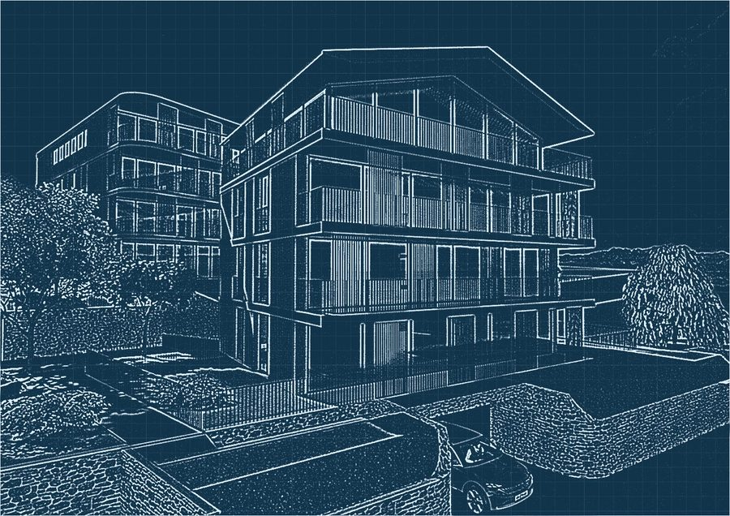
Perizie, ristrutturazioni e interni
Valutazioni tecniche, progetti di ristrutturazione e interni che ridanno qualità e valore a ciò che esiste.

Progetti del gruppo
Residenze progettate e realizzate dal Gruppo New Trends nel Luganese.
Residenza Green Horse
Muzzano · 12 appartamenti · in costruzione

Residenza Optima
Montagnola · 6 appartamenti
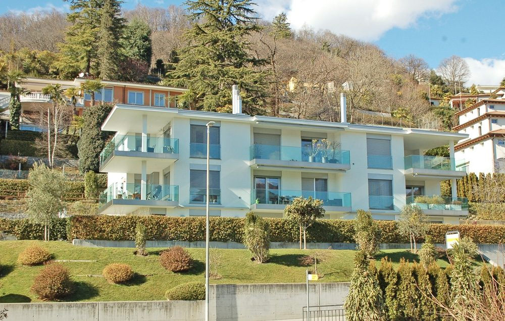
Residenza Miracolli
Savosa · Porza · 8 appartamenti
Hai un terreno o un immobile? Ti diciamo cosa ci si può costruire.
Prenota una consulenzaQuello che disegniamo, lo vedi costruito.
Trascina il cursore per confrontare il progetto con l'edificio finito.
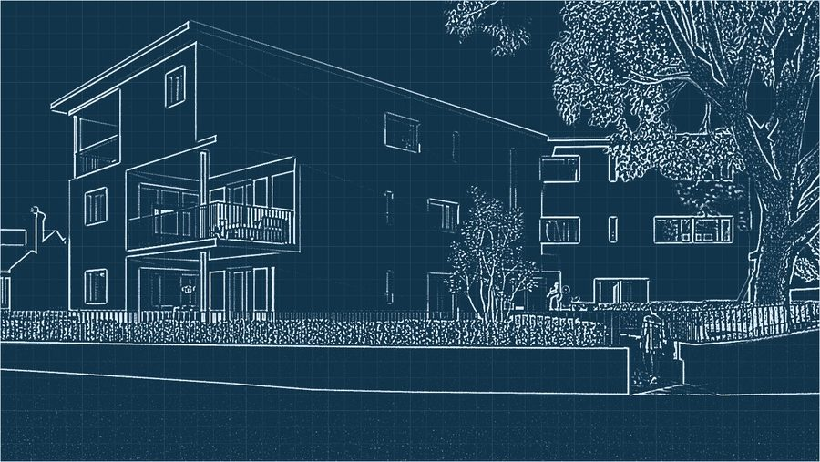
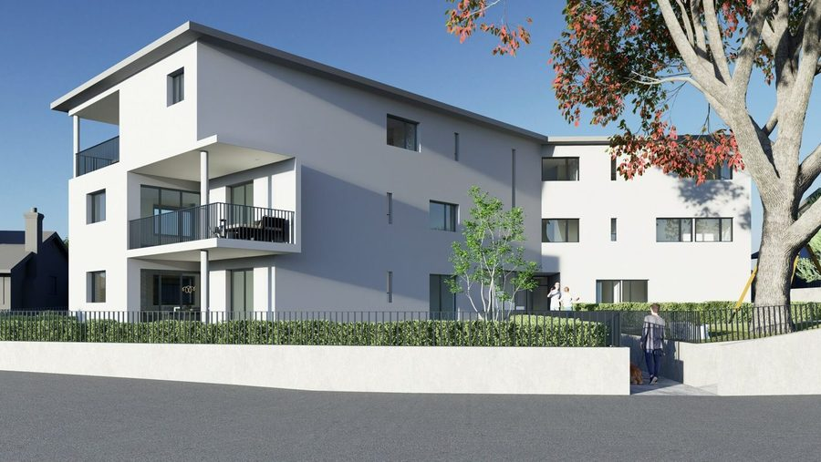
ProgettoRealtàResidenza Ferrari
Tesserete · 8 appartamenti · in costruzione
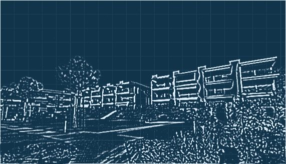
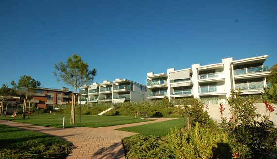
ProgettoRealtàResidenza Maraini
Savosa · 24 appartamenti
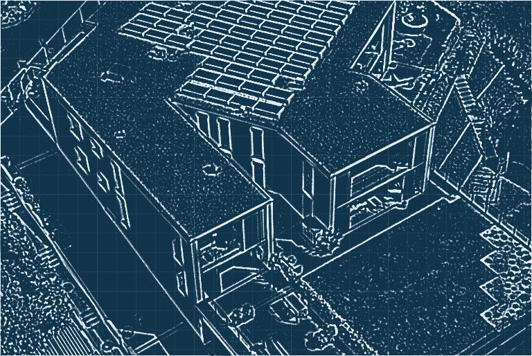
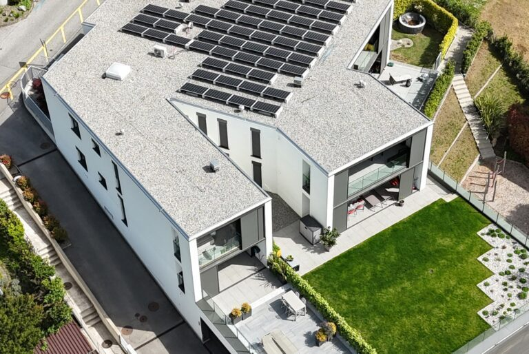
ProgettoRealtàResidenza Synthesis
Vezia · 8 appartamenti e 4 spazi commerciali
Dall'idea al cantiere
Un percorso chiaro in quattro fasi, con decisioni e costi sempre sotto controllo.
Fase 01 · Ascolto e sopralluogo
Ci incontriamo, visitiamo il terreno o l'immobile e mettiamo in chiaro esigenze, budget e tempi. Il primo incontro è senza impegno.
Fase 02 · Concept
Prime idee, volumi e materiali: ti mostriamo come potrebbe essere, con una stima dei costi già dall'inizio.
Fase 03 · Progetto e licenza
Sviluppiamo il progetto definitivo e seguiamo la domanda di costruzione con il Comune.
Fase 04 · Direzione lavori e consegna
Seguiamo il cantiere fino alla consegna, con Edil Trend o con l'impresa che preferisci.
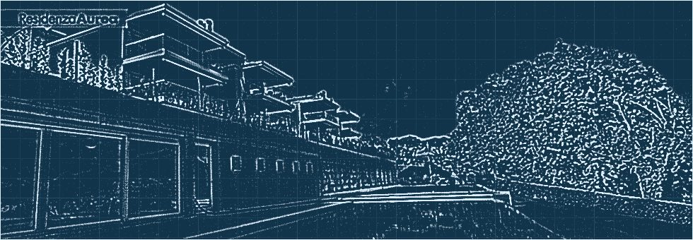
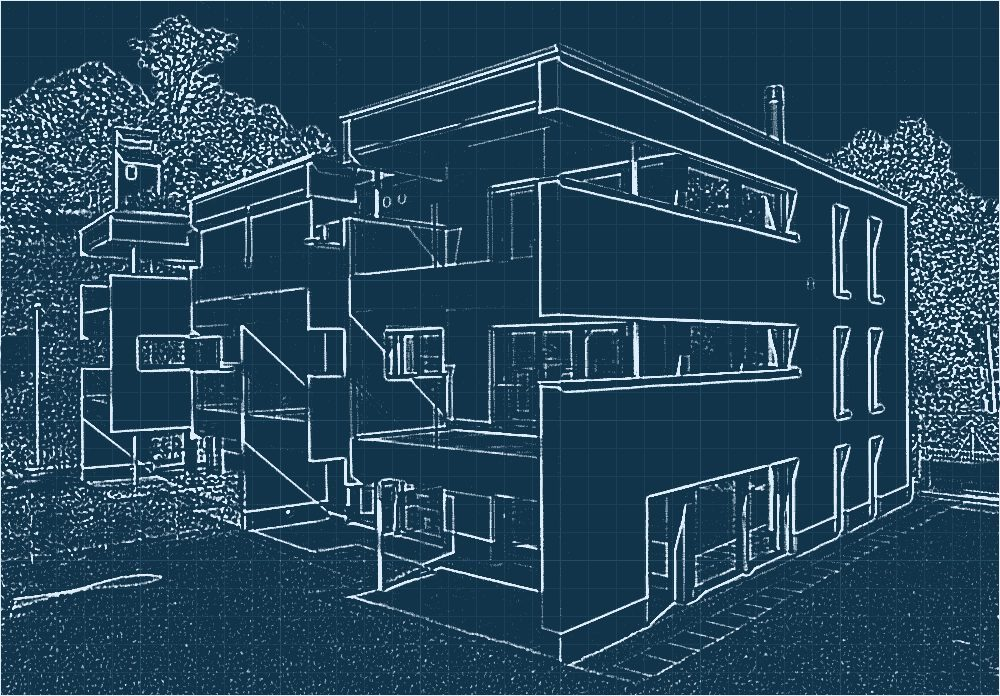
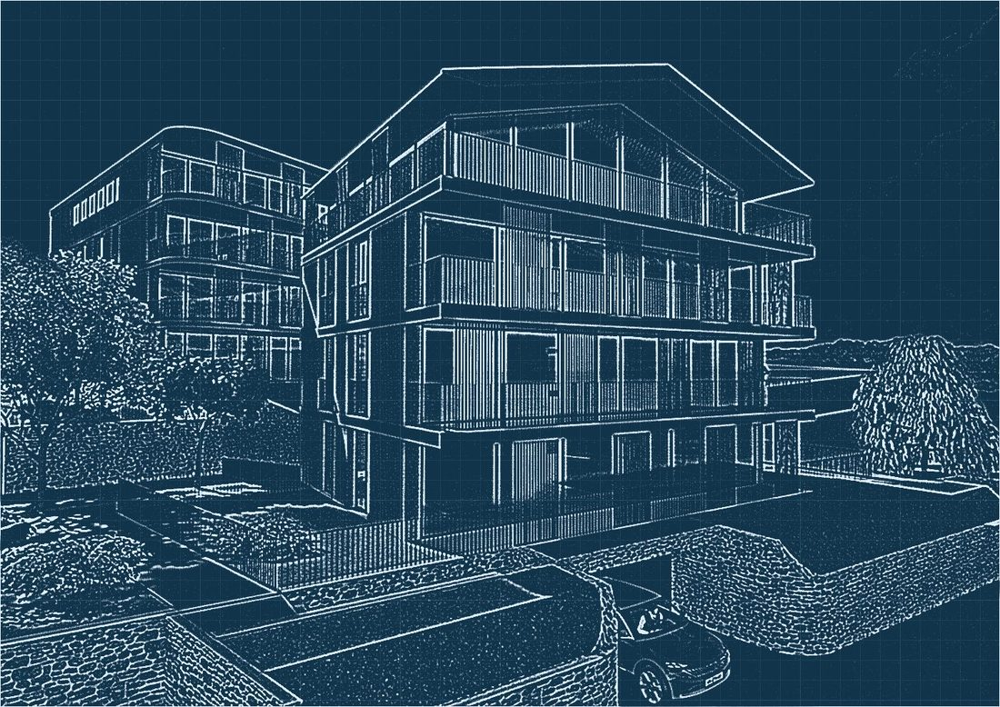
Residenza Aurea, Collina d'Oro · studio dei volumiLo studio giusto per il tuo progetto
Progetto curato, comunicazione chiara e un gruppo che segue anche costruzione e vendita: spazi pensati per durare e per valere.
Progetti su misura per te
Ogni pianta, materiale e dettaglio parte da come vivi e da cosa ti serve davvero, non da un modello già pronto.
Chiarezza a ogni passo
Dal primo incontro alla consegna sai sempre a che punto siamo, cosa viene dopo e perché.
Un percorso senza stress
Coordiniamo noi tecnici, Comune e impresa: tu prendi le decisioni importanti, al resto pensiamo noi.
Tempi e costi sotto controllo
Progettiamo con uno sguardo al mercato e al budget, per evitare ritardi e spese che non servono.
“Progettare con uno sguardo al mercato: ogni scelta deve sostenere il valore e il risultato dell'immobile.”
New Trends nasce a Lugano nel 1991. Oggi il gruppo riunisce New Trends SA per la consulenza e l'intermediazione immobiliare, Archi Trend SA per la progettazione ed Edil Trend SA per la realizzazione.
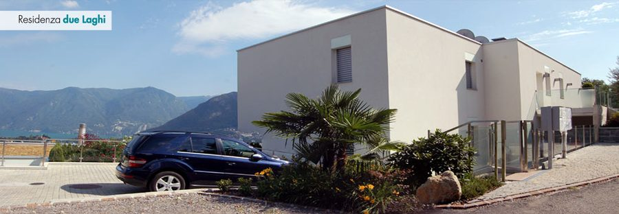
Domande frequenti
Le domande che ci fanno più spesso su progetto, tempi e costi. Non trovi la tua? Chiamaci al +41 91 921 00 31.
Potete lavorare su un progetto che ho già?
Sì. Possiamo rivedere, completare o sviluppare un progetto esistente, mantenendo l'idea di partenza.
Quando conviene coinvolgere l'architetto?
Il prima possibile, idealmente prima di comprare il terreno o l'immobile: così sai subito cosa si può costruire e quanto costa.
Vi occupate anche della domanda di costruzione?
Sì, prepariamo la documentazione e seguiamo la domanda di costruzione con il Comune fino alla licenza.
Dovete costruire per forza con Edil Trend?
No. Con Edil Trend hai un solo gruppo dal progetto alle chiavi, ma possiamo dirigere i lavori anche con l'impresa che scegli tu.
Quanto costa il primo incontro?
Il primo incontro è senza impegno: ascoltiamo il progetto e ti diciamo come possiamo aiutarti.
Fate anche perizie e ristrutturazioni?
Sì: perizie tecniche, progetti di ristrutturazione e interni, per privati e investitori.
In quali zone lavorate?
Soprattutto nel Luganese e nel resto del Ticino.
Creiamo qualcosa di eccezionale
Il primo incontro è senza impegno. Scegli tu come preferisci sentirci.
Via Pretorio 11, 6900 Lugano
Raccontaci il progetto: ti richiamiamo per fissare il primo incontro.

Diamo forma alla tua idea
Dai primi schizzi alla consegna delle chiavi: progettiamo con cura e costruiamo con un gruppo che conosce il territorio.
Prenota una consulenza